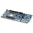
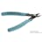
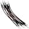

Things used in this project
Hardware components |
|
|  | Nordic Semiconductor nRF52840 Development Kit |

|
Seeed Studio XIAO ESP32S3 Sense |

|
Blues Notecard (Cellular) |
Hand tools and fabrication machines |
|

|
Soldering iron (generic) |
|  | Cable Cutter, 143mm |
|  | 10 Pc. Jumper Wire Kit, 5 cm Long |
Story
Background:
People living with mobility impairments face daily challenges that often go unseen by those who take their ability to walk for granted. Whether due to injury, illness, or other reasons, these individuals may find themselves unable to move freely, relying on mobility aids or the assistance of others to navigate the world around them. While some may have intact physical functionalities, the limitation lies in their minimal strength, rendering them unable to move effectively.
Despite advancements in assistive technology, there remains a significant gap in the market for devices specifically designed to address the needs of individuals with low leg strength. While wheelchairs and mobility scooters offer solutions for some, they may not fully meet the needs of those who desire greater independence and the ability to walk unassisted. In short, we need ways to have people with low leg strength to be able to walk independently, instead of relying on wheelchairs. On top of addressing the problem of having low leg strength, it is also worth noting that individuals with deteriorating leg strength also encounter other issues such as loss of balance or coordination of the body.
My aim is to develop a novel, neural network-assisted hydrogel exoskeleton , an advanced wearable device designed to assist individuals with low leg strength and coordination problems. This innovative exoskeleton aims to enable users to walk independently without relying on traditional mobility aids like wheelchairs, thereby enhancing their quality of life. Traditional solutions like wheelchairs and mobility scooters often fall short in meeting the needs of those who desire greater independence and the ability to walk unassisted. My goal is to help individuals, including those with conditions such as muscular dystrophy, maintain their mobility for as long as possible, potentially delaying the need for a wheelchair.
Device functionality:
The Hydrogel Exoskeleton leverages cutting-edge technology to provide comprehensive support and enhance mobility. Here’s how it works:
Materials: I chose a high-strength, highly stretchable photo-cross-llinkable PEG (polyethylene glycol) based hydrogel for the base material, as it is non-cytotoxic, durable and cost-efficient. This PEG-based hydrogel possesses water-swelling ability. By controlling the degree of swelling and the location of swelling, we are able to control precisely the location to provide mechanical support. I also embedded SEEED studio motion sensor inside the hydrogel to detect the motion. This motion sensor also sends one locational signal and one power signal to the control board. By knowing the location and the strength, the code will calculate the amount of force needed on the other leg or the other parts of the body to achieve a reasonable movement and force.
Neural Network and Feedback System: To address balance and coordination, the exoskeleton incorporates a sophisticated neural network and real-time feedback system. Embedded sensors throughout the device continuously monitor the user's posture, gait, and movements. This data is processed by the neural network, which dynamically adjusts the exoskeleton's support to optimize balance and coordination. For example, if the user begins to lose balance, the system can redistribute support to stabilize them, thereby enhancing safety and confidence.
To address balance and coordination, the exoskeleton incorporates a sophisticated neural network and real-time feedback system. Embedded sensors throughout the device continuously monitor the user's posture, gait, and movements. This data is processed by the neural network, which dynamically adjusts the exoskeleton's support to optimize balance and coordination. For example, if the user begins to lose balance, the system can redistribute support to stabilize them, thereby enhancing safety and confidence.
Ergonomic Design: The Hydrogel Exoskeleton is designed to be lightweight and ergonomic, ensuring maximum comfort and freedom of movement. It molds to the body’s contours, providing targeted support where it’s needed most without restricting the user's natural movements. This design also allows users to keep their hands free, further enhancing their independence.
The Hydrogel Exoskeleton is designed to be lightweight and ergonomic, ensuring maximum comfort and freedom of movement. It molds to the body’s contours, providing targeted support where it’s needed most without restricting the user's natural movements. This design also allows users to keep their hands free, further enhancing their independence.
Adaptive and Versatile: The exoskeleton is highly adaptable, making it suitable for a wide range of users, including those with varying degrees of leg strength and coordination issues. Whether assisting individuals with mobility impairments, enhancing athletic performance, or aiding in rehabilitation, the Hydrogel Exoskeleton offers unmatched versatility.
The exoskeleton is highly adaptable, making it suitable for a wide range of users, including those with varying degrees of leg strength and coordination issues. Whether assisting individuals with mobility impairments, enhancing athletic performance, or aiding in rehabilitation, the Hydrogel Exoskeleton offers unmatched versatility.
In summary, the hydrogel exoskeleton is a revolutionary device that combines advanced materials and intelligent systems to provide comprehensive support for individuals with low leg strength and coordination challenges, enabling them to walk independently and confidently.